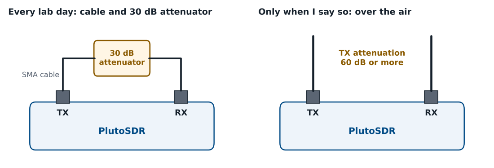
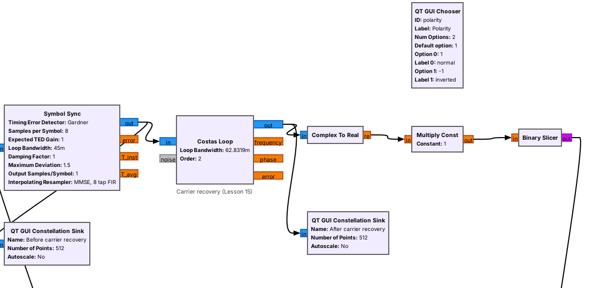
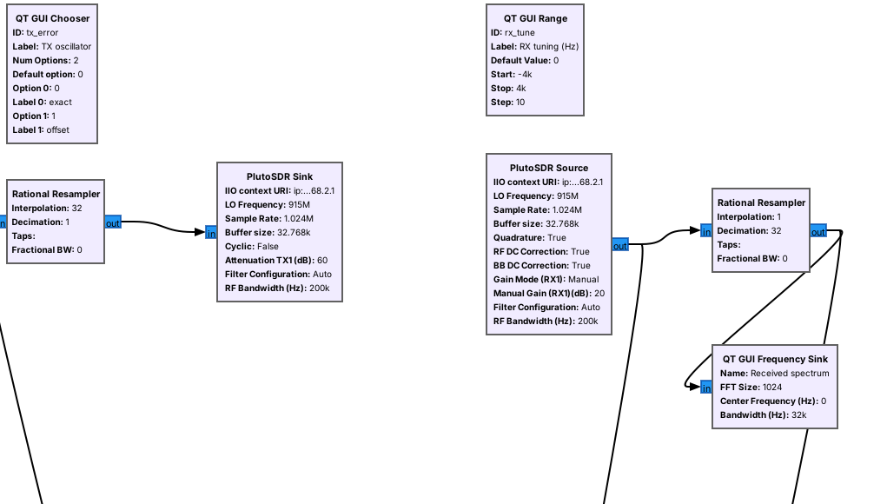
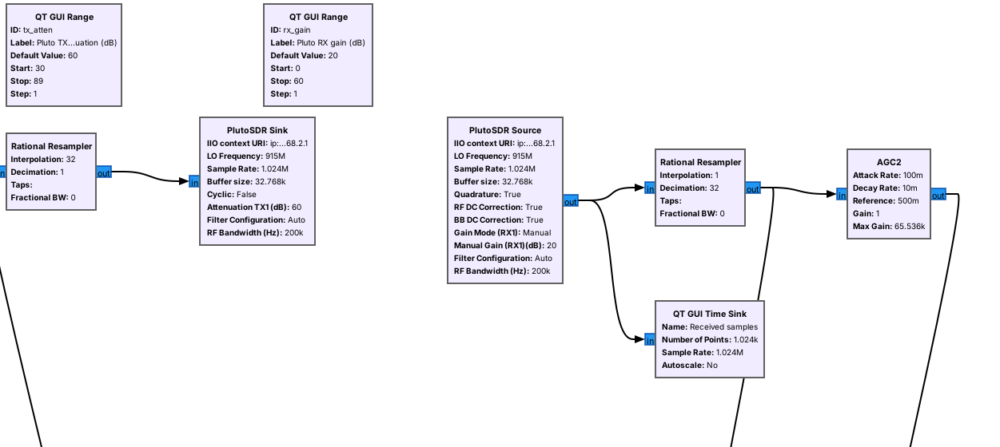

L10 Lab — PAM Link#
PAM Link
Get your own line across a PlutoSDR at 915 MHz with the course’s PAM chain, and fix what a real radio does to it.
L10 Lab · Module 4: Digital Modulation · Dr. Neil Rogers
Learning Objectives
- I can implement a PAM link that transmits and receives ASCII text end-to-end.
The Big Picture

Every step runs L10-pam-pluto.grc, the link from Lesson 10 on one PlutoSDR at 915 MHz, and the map shows which controls and displays of its window each block of steps uses. The radio connects through a cable and the 30 dB attenuator from its TX port to its RX port, or over the air at low power when I say so. Steps 1 to 4 send your own line and watch the constellation before and after carrier recovery. Steps 5 and 6 restart the link and note which Polarity setting delivers the line each time. Steps 7 to 9 switch on a TX oscillator error the flowgraph draws at random and does not show, find it on the spectrum, and retune the receiver. Steps 10 to 12 drop the signal toward the noise floor, then overload the receiver, and Step 13 disconnects the radio. Your Part 1 line goes into Step 2, your Part 1 predictions go with Steps 6 and 9, what you work out goes in Table B of the packet, and the screenshots go in Figures 1 to 4.
Predict First
Choose a run, read where its signal sits on the received spectrum, and set the My Prediction slider to the RX tuning you think brings it back to 0. Show the retune stays off until you move the slider, and choosing another run or moving the slider hides the answer again. The three runs sit closer to 0 than the TX oscillator error of Step 7 ever does, so none of them is a setting you record.
Send Your Line
Cable TX to RX through the 30 dB attenuator, or antennas if I say so.
Put your Part 1 line in
msgand runL10-pam-pluto.grc.Check the spectrum and both constellations; get the line to arrive.

Connect the radio. With the Pluto unplugged, connect its TX port to its RX port with a short SMA cable and the inline 30 dB attenuator. Never connect the cable without the attenuator: the RX input survives only a few dBm, and the transmitter can put out more than that. If I say we are going over the air today, put an antenna on each port instead and keep Pluto TX attenuation (dB) at 60 or more for the whole lab, so the 915 MHz signal stays at low power.
Send your line. Plug in the Pluto, open
L10-pam-pluto.grc, put your line from Part 1 Table A inmsg, in quotes, and run it with TX oscillator on exact and RX tuning (Hz) at 0. Pluto TX attenuation (dB) starts at 60 and goes no lower than 30; never set it lower or change the slider’s range, because the 30 dB floor and the attenuator together keep the RX input below its limit.Check the picture. The spectrum should show one signal about 5.4 kHz wide, \((1 + \alpha) \times 4\) kbaud as in Lesson 9, centered on 0, and the Received samples should stay inside ±1, the Pluto’s limit, above which they clip. Compare the Before carrier recovery and After carrier recovery constellations with Lesson 10’s “Carrier Recovery on the Constellation”.
Get the line. If no line arrives within 5 s, switch Polarity, because the Costas Loop may have locked upside down. Once your line shows in the Received label, paste a screenshot of the running window as Figure 1. If neither setting delivers it, check the spectrum: no signal at all points to the cable, the attenuator, or the Pluto’s URI, and a signal with no line usually means
msgholds more than one line, so put it on one line and run it again.
Which Way Up?
Stop and start the flowgraph four times.
Each run, find the Polarity setting that delivers your line.
Watch the After carrier recovery constellation each time.

Restart it four times. Stop and start the flowgraph four times, since each start begins from a new carrier phase, and on each run repeat Step 4: if no line arrives within 5 s, switch Polarity. Watch the After carrier recovery constellation on each run; it sits before the Polarity switch, so only the Received label tells you which way up the loop locked.
Count the flips. Record how many of the four runs needed Polarity set to inverted, and compare with your Part 1 prediction.
A Second Radio’s Oscillator
Switch the TX oscillator to offset: the line stops.
Find the signal on the spectrum and work out the error.
Retune the receiver until the line comes back.

Switch the error on. With the line arriving, set TX oscillator to offset. One Pluto’s TX and RX share one crystal, so they agree exactly; this switch plays the part of a second radio’s crystal. The flowgraph moves the PlutoSDR Sink off 915 MHz by an amount it draws at random when the flowgraph starts and does not show, as a second radio’s oscillator would. Watch the spectrum, both constellations, and the Lines label, and paste a screenshot of the window once the line has stopped as Figure 2. Leave the flowgraph running through Step 9, because a restart draws a new error.
Find the error. Read where the center of the signal now sits on the spectrum.
Retune the receiver. The TX oscillator stands for another radio, which you do not control, so the fix goes in your receiver. Set RX tuning (Hz) from what the spectrum shows, compare the setting with your Part 1 prediction and with what you did in Predict First, and switch Polarity if the line does not return within 5 s. If the signal moves further from 0 on the spectrum, the sign is backward. Once the line arrives again, record the setting and paste a screenshot of the window as Figure 3.
Too Little, Too Much
Drop the signal toward the noise floor: TX attenuation up, RX gain down.
Overload the receiver on the cable: TX attenuation down, RX gain up.
Watch the samples, the constellations, and the line each time.

Start clean. Set TX oscillator to exact and RX tuning (Hz) to 0, and get your line arriving again.
Too little. Set Pluto TX attenuation (dB) to 89 and Pluto RX gain (dB) to 0. Watch the spectrum, the Received samples, both constellations, and the Lines label for about 20 s, and paste a screenshot of the window as the left pane of Figure 4. Then set Pluto TX attenuation (dB) back to 60 and Pluto RX gain (dB) back to 20.
Too much. On the cable, set Pluto TX attenuation (dB) to 30 and Pluto RX gain (dB) to 60. Watch the same displays for about 20 s, paste a screenshot as the right pane of Figure 4, and note whether the line still arrives. Then set them back to 60 and 20. Over the air, skip this step, since the TX attenuation stays at 60 and the signal may never reach ±1; leave the right pane empty and say so.
Disconnect. Stop the flowgraph and unplug the Pluto before you disconnect the cable or the antennas.
No Hardware?
If the PlutoSDR does not work
L10-pam-sim.grc is the same link with the radio replaced by a simulated channel: a new random carrier phase each run, the same hidden TX oscillator error, and the same Polarity, TX oscillator, and RX tuning controls. Do Steps 2 to 9 on it, with your own line and your own screenshots, and say on the packet’s Documentation line that you used it. Steps 10 to 12 need the radio; do them at the laptop of a classmate whose PlutoSDR works, taking turns, and bring the failed Pluto to EI.
Your Part 2 Entries
This frame collects every box you filled in on this page. Your entries stay in this browser only, saved as you type. Download my packet writes them into the Measured cells of the blank packet and saves the PDF. The download locks every field, the Predicted cells included, so type your predictions into your own copy of the packet first, then use Fill my own copy and choose that file: the page keeps your predictions and adds your measurements beside them. Paste Figures 1 to 4 and write Part 3 in your copy, or on the printout, and upload one PDF to Gradescope. Export entries saves a small backup file you can Import on another laptop.
Lab Packet
The L10 Lab packet is one submission, turned in complete before Lesson 11:
Part 1, Predict (individual, before the lab period): your line of text in Table A and the two shaded cells in Table B, with your reasoning attached.
Part 2, Measure (in class, on your own laptop and PlutoSDR): the white Measured cells of Table B, and Figures 1 to 4.
Part 3, Analyze (individual, after the lab): three prompts, each answered from your own table and figures.
L10-pam-pluto.grc: the link on one PlutoSDR at 915 MHz, from its TX port to its RX port.
L10-pam-sim.grc: the same link with a simulated channel in place of the radio, for No Hardware?.
For Part 3
Do Part 3 after class, with your table and figures beside you. It asks about three things:
Your four runs in Table B and Figure 1, and the Polarity switch.
Your spectrum reading and RX tuning in Table B, against Figures 2 and 3.
The two panes of Figure 4, against Figure 1.
I grade each answer on a claim, the evidence from your own table and figures, the reasoning that connects them, and the uncertainty in your readings.
Looking Ahead
Lesson 11 writes and packages a custom block like the Text Sink that showed your line today.